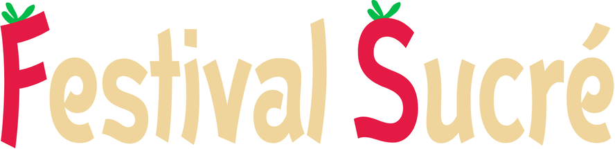
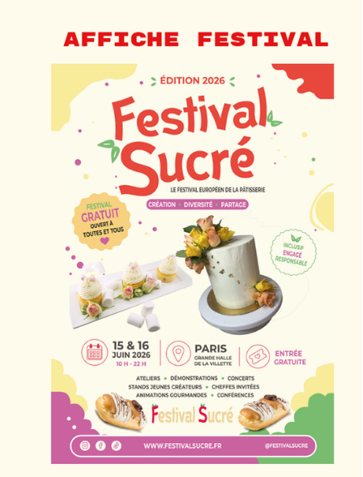
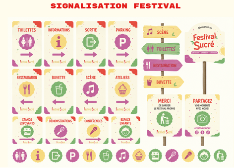

Festival Sucré
Le Festival Sucré est un projet universitaire dont l’objectif était d’imaginer un événement fictif et de créer son identité visuelle complète. J’ai choisi de travailler sur un festival autour de la pâtisserie, un univers gourmand, coloré et chaleureux.
Pour donner vie à ce festival, j’ai conçu un logo, une affiche de promotion, un billet d’entrée ainsi que la signalétique du festival. Ce projet m’a permis de mobiliser des compétences variées en Illustrator, Photoshop, mise en page, composition graphique et construction d’univers visuels.
Logo du Festival

Affiche de promotion

Billet d’entrée

Signalétique du festival

Compétences développées
- Création de logo sur Illustrator
- Création d’affiche promotionnelle
- Création de billet d’entrée sur Photoshop
- Création de signalétique
- Construction d’une identité visuelle complète
- Travail sur la composition et la hiérarchie visuelle
- Maîtrise d’Illustrator et Photoshop